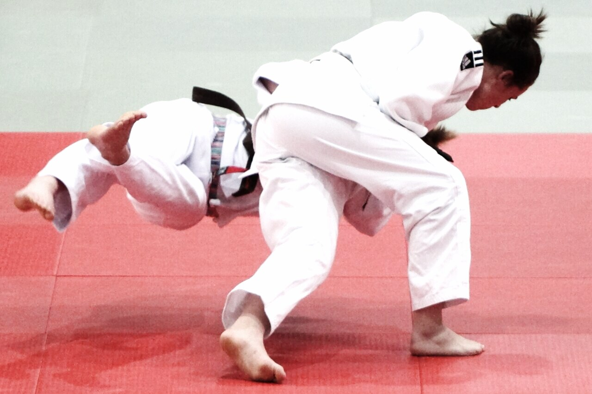

BJJ · Concept
Inversion
Inversion means rolling your hips over your shoulders—often for guard retention, berimbolo-family entries, or scramble recovery. It lives under guard / open guard and intersects leg entanglement games. Train necks carefully.
What Is Inversion?
Inverted positions put the bottom player’s hips above or past the head line to reset hooks or attack.
Modern open guard and leg-entanglement games use inversion constantly; fundamentals classes should still teach safe progressions.
Cross-link retention and shrimp as less risky alternatives when appropriate.
How Inversion Works
From open guard, when a pass clears your feet, roll to invert and reattach hooks or enter SLX/K-guard.
Keep chin awareness and don’t dump your full weight on the neck—use shoulders and posts.
Berimbolo-family attacks invert to take the back; treat those as advanced under coaching.
Passers: follow the hips, don’t chase the feet into a triangle.

Gi vs No-Gi
Gi. Lapel guards and worm variants invert often; fabric can trap necks—tap early.
No-gi. Cleaner rolls but faster scrambles; same safety rules.
What Does It Look Like in Practice?
Alex loses both hooks, inverts, and recovers De La Riva.
Jordan inverts into a saddle entry under an ADCC-style rule set.
Types / Variations
Retention inversion
Emergency reattach of hooks.
Entry inversion
Into berimbolo / leg entanglements.
Scramble inversion
Neutralize a pass mid-flight.
Entries, Counters, and Escapes
Triggered by failed retention or intentional entries. Counters: stack carefully, follow hips, or disengage. Escapes for the inverter: bail to turtle if the neck loads.
Inversion vs Shrimp for Retention
| Factor | Inversion | Shrimp |
|---|---|---|
| Risk to neck | Higher | Lower |
| Upside | Big recovery / entries | Consistent fundamentals |
| Best when | Pass already clearing feet | You still have frames |
| Related | leg-entanglement | guard-retention |
Special Considerations
IBJJF, ADCC, and sport context
Inversion itself is generally allowed; some attacks from inverted positions may be restricted by division—verify current PDFs especially for leglocks.
Safety
Progress slowly. No live inversion without neck prep and a coach. Tap to stacks early.
Common mistakes
- Inverting as a panic flop.
- Holding inverted under a heavy stack.
- Skipping shrimp fundamentals.
- Ignoring rule restrictions on finishes.
FAQ
Questions we hear on the mats, in forums, and under instructional videos—answered in Martial Index voice.
What is inversion in BJJ?
Rolling hips over shoulders to retain guard, enter attacks, or scramble.
Is it beginner material?
Movement drills yes; live berimbolos under a coach.
Dangerous?
Neck and spine risk if stacked—train smart.
Why invert instead of shrimp?
When feet are already cleared and you need a big reset.
Gi vs no-gi?
Both; gi adds lapel complexity.
Illegal?
Movement usually fine; some finishes aren’t—verify the book.
Related concept?
Guard retention and leg entanglement.
The Bottom Line
Inversion is a high-upside, higher-risk retention and entry tool—earn it with mobility work and coaching.